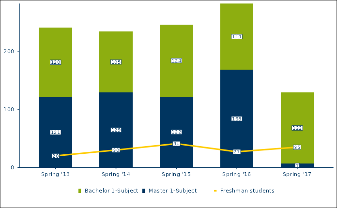

Plot grouped line chart on top of vertical stacked bar chart (combination chart of figure types 1 and 4)
Source:R/rub_plot.R
rub_plot_type_1_and_4.RdPlot grouped line chart on top of vertical stacked bar chart (combination chart of figure types 1 and 4)
Usage
rub_plot_type_1_and_4(
df,
x_var,
x_var_label = NULL,
x_axis_label = "",
y_var,
y_axis_label = "",
fill_var,
fill_reverse = FALSE,
fill_label = NULL,
group_var,
group_label = NULL,
caption = "",
caption_prefix = "Quelle:",
filter_cutoff = 0.04,
facet_var = NULL,
color = RUB_colors["blue"],
palette_reverse = FALSE,
base_family = get_font_df()[["family"]],
base_size = 11,
plot_width = 6.8
)Arguments
- df
Data frame
- x_var
Required variable name for the variable containing the discrete x-coordinates.
- x_var_label
Optional variable name for the character variable containing the names of the x variable, defaults to NULL.
- x_axis_label
Optional label for the x-axis, defaults to an empty string.
- y_var
Required variable name for the variable containing the y-coordinates. Will be coerced to numeric with
as.numeric.- y_axis_label
Optional label for the y-axis, defaults to an empty string.
- fill_var
Variable name for the discrete variable which determines the groups to be stacked, e.g. degree.
- fill_reverse
Boolean indicating whether the order of the fill variable should be reversed, defaults to FALSE.
- fill_label
Optional variable name for the character variable containing the names of the fill variable, defaults to NULL.
- group_var
Variable name for the discrete variable which determines the groups forming one line, e.g. degree_id.
- group_label
Optional variable name for the character variable containing the names of the group variable (e.g. degree_txt), defaults to NULL.
- caption
Optional character containing the data source for the figure (prefix 'Quelle:' is automatically added).
- caption_prefix
Optional character containing the prefix for the caption, defaults to 'Quelle:'.
- filter_cutoff
Optional cutoff value for the suppression of data labels. By default, all values below 0.04 of the total value of the stacked bar chart are suppressed.
- facet_var
Optional variable name for the discrete variable to facet by, defaults to NULL.
- color
Color for font and borders, defaults to
RUB_colors["blue"], i.e. #003560.- palette_reverse
Optional boolean indicating whether the colors in the palette should be reversed, defaults to FALSE.
- base_family
base font family, defaults to RubFlama
- base_size
base font size, defaults to 11
- plot_width
Width of the plot in inches, defaults to 6.8
See also
Other rub_plot_types:
rub_plot_type_1(),
rub_plot_type_2(),
rub_plot_type_3(),
rub_plot_type_4()
Examples
df_t1_and_t4_ex1 <- tibble::tribble(
~term, ~students, ~degree, ~group, ~figure_type_id,
"Spring '13", 120, "Bachelor 1-Subject", NA, 1L,
"Spring '14", 105, "Bachelor 1-Subject", NA, 1L,
"Spring '15", 124, "Bachelor 1-Subject", NA, 1L,
"Spring '16", 114, "Bachelor 1-Subject", NA, 1L,
"Spring '17", 122, "Bachelor 1-Subject", NA, 1L,
"Spring '13", 121, "Master 1-Subject", NA, 1L,
"Spring '14", 129, "Master 1-Subject", NA, 1L,
"Spring '15", 122, "Master 1-Subject", NA, 1L,
"Spring '16", 168, "Master 1-Subject", NA, 1L,
"Spring '17", 7, "Master 1-Subject", NA, 1L,
"Spring '13", 20, NA, "Freshman students", 4L,
"Spring '14", 30, NA, "Freshman students", 4L,
"Spring '15", 41, NA, "Freshman students", 4L,
"Spring '16", 27, NA, "Freshman students", 4L,
"Spring '17", 35, NA, "Freshman students", 4L
)
rub_plot_type_1_and_4(
df = df_t1_and_t4_ex1,
x_var = term,
y_var = students,
fill_var = degree,
group_var = group,
base_family = "sans"
)
